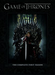

Game of Thrones


Stephen Klancher: June 27, 2011 
This episode was ridiculously awesome. Better than most movies I've ever seen.
Stephen Klancher: June 29, 2011
This was inadvertently spoiled for Grant and I, which is too bad because it would have had a very high wtf-value for me.